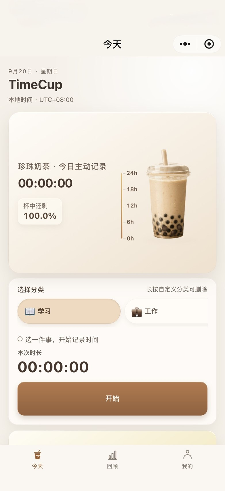
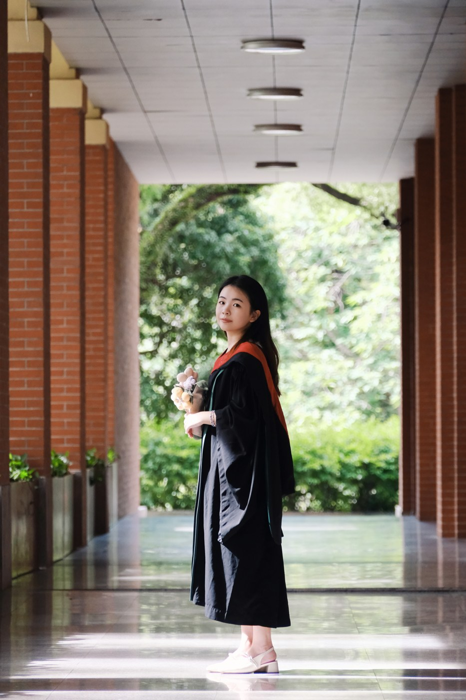
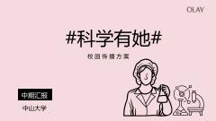
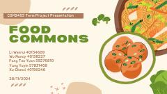
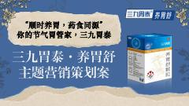
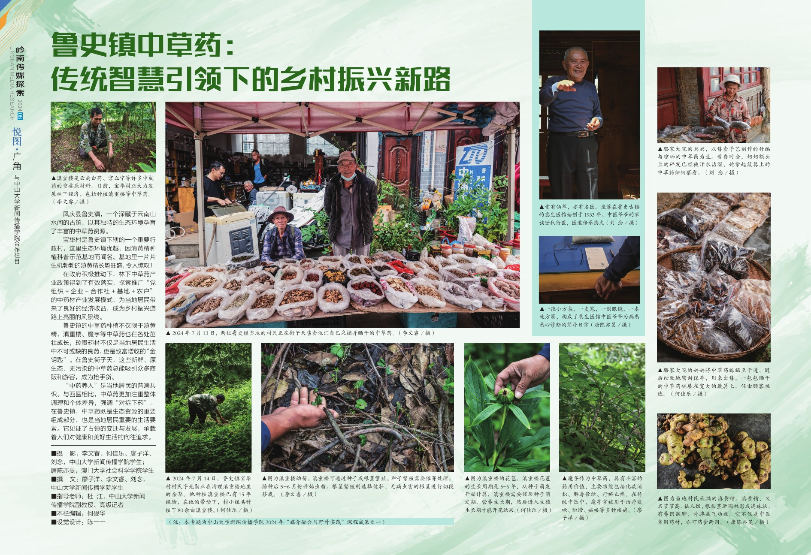
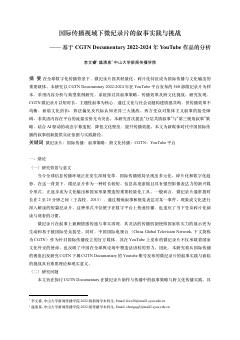
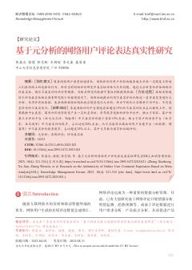
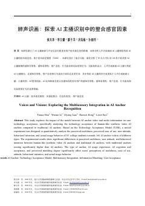

离线 MVP · 核心流程自动化验证2026
TimeCup｜用饮品看见时间
TimeCup 是一款以饮品余量呈现时间的微信小程序：奶茶用于主动记录，柠檬水、绿茶、红茶与咖啡分别呈现日、周、月、年的自然进度。

个人项目 · 产品策划、交互设计与 Codex 协作开发
产品定义与取舍 · AI 协作与交互迭代查看完整作品 ↗
01 / ABOUT ME
从研究与洞察出发，
把问题转化为内容、策略与产品。
我拥有新闻传播学习背景，实习经历涵盖深度报道、品牌传播和多媒体内容制作。我的实践涉及访谈调研、数据分析、内容运营和团队协作，并持续探索 AI 工具在创作中的应用。
Understand deeply.
Make thoughtfully.
求职方向 产品经理 / 产品运营 / 平台运营 / 策略传播

02 / WORK
从关键词出发，找到你想了解的作品。
22 件作品，也可按能力与类型浏览。
全部作品 · 按类型分组 · 22 件作品
围绕屈臣氏185周年与新店布局，方案区分品牌商、商业地产方和消费者三类沟通对象，将复古快闪店的城市记忆与上海旗舰店的创新体验整合为双线叙事，并规划新闻稿框架、媒体矩阵及传播节…
博雅公关广州 Brand Marketing Team · PR 实习生 · 2026.02–2026.03
聚焦科研女生在专业选择与持续投入中的自我怀疑和外部质疑，方案提出“科研女孩，闪光前行”的传播主题。

宝洁传播公关第 7 期高校互培项目 · 2023.09–2023.12
围绕香港食物浪费与剩食再分配议题，团队为 Food Commons 设计可操作的公益内容：用定格动画展示瑕疵柑橘制成果酱，并以“小雪”节气海报传达食物保存与节约理念。

CityU 交换期间 · COM2405 传播与营销课程 · 项目组长 · 2024
方案从年轻人养胃信息过载、产品选择困难与品牌认知出发，以二十四节气串联“顺时养胃”主张，设计守胃犬与草本角色 IP，并规划 H5、AR、快闪体验、科普内容和用户共创。

主题营销策划作品 · 项目组长
在云南凤庆为期 20 天的驻地实践中，团队以鲁史镇中草药为选题切口，将林下种植、乡村集市与传统医馆组织为一条观察地方生活的叙事线索。

2024“媒介融合与野外实践”课程 · 云南凤庆驻地 20 天 · 摄影组组长
围绕高层住宅火灾风险，报道从烟气蔓延、人员疏散和外部救援限制切入，梳理内部消防供水、设施维护及外墙保温材料的隐患，再结合人口普查与住宅研究，解释居住规模扩大为何让长期维护问题…
南方周末经济新闻部 · 实习记者 · 2025.07–2026.01
以理想 i8 碰撞测试引发的争议为入口，报道拆解强制认证与定制化测试的区别，核对车辆类型、碰撞速度及信息披露变化，并结合检测机构商业模式与专家解释，讨论测试结果如何进入营销传…
南方周末经济新闻部 · 实习记者 · 2025.07–2026.01
报道以多地高新技术企业资格被取消为线索，结合公开文件统计、认定规则与多方访谈，梳理企业为何申请、为何被撤销，以及补税、补贴与中介服务背后的利益关系。
南方周末经济新闻部 · 实习记者 · 2025.07–2026.01
从用户被反复推销与一线员工被指标追赶的双重困扰出发，报道追踪运营商、外呼公司和营业网点之间的业务关系，拆解考核、话术与用户投诉的关联。
南方周末经济新闻部 · 实习记者 · 2025.07–2026.01
以三家平台季度财报为切口，报道复盘外卖补贴竞争的升级过程，对照平台投入、商户经营和消费者选择，分析订单增长为何未必带来利润与忠诚度。
南方周末经济新闻部 · 实习记者 · 2025.07–2026.01
从热门电影引发的分账争议切入，报道拆解一张电影票在片方、发行与影院之间的收入分配，追溯比例博弈及政策沿革，并比较不同市场的做法。
南方周末经济新闻部 · 实习记者 · 2025.07–2026.01
报道围绕多地公交运输快递的尝试，分析公交闲置运力、场站资源与物流降本需求如何形成合作空间。
南方周末经济新闻部 · 实习记者 · 2025.07–2026.01
从新能源车主面临的电池衰减、更换成本与回收渠道难题出发，报道追踪车企、电池厂和第三方回收商之间的流转路径，解释正规企业与小作坊的竞争成因。
谷河青年综合与深度报道部 · 主编 & 记者 · 2023.09–2025.09
从年轻人“不想生”“不敢生”的真实困惑出发，作品结合人口统计、社会调查、政策资料与社交平台讨论，围绕养育成本、女性职场处境和托育缺口三条线索，解释生育抉择背后的现实约束。
2023 中国数据新闻大赛 · 团队统筹 · 策划、数据检索与报道撰写
以 CGTN Documentary 在 YouTube 发布的 560 部微纪录片为样本，结合主题分类、传播数据描述统计和前十高播放作品编码，分析内容结构与跨文化表达。

省级大学生创新创业训练计划 · 项目负责人 · 2023.12–2025.05
围绕网络评论能否可靠支撑研究与决策，团队从既有实证文献中提取评论类型、平台、样本量和不真实评论比例，最终纳入 223 篇中英文文献进行元分析。

国家级大学生创新创业训练计划 · 核心成员 · 2022.12–2023.12
以 83 名被试的两类 AI 主播观看实验为基础，结合技术接受量表、统计比较与后续访谈，研究声音和画面匹配对体验判断的关系。

《数字媒体前沿》课程研究 · 2024.03–2024.06
NO MATCHES YET
试试更简短的关键词，或清除筛选后重新查找。
03 / RESUME
2026.09–2028.06
新闻与传播（专业硕士）
核心课程：传播学研究方法、国际传播、数据分析与可视化、策略传播等。
2022.09–2026.06
新闻学本科
排名前 10%，保研浙江大学。核心课程：财经新闻与经济学基础、量化和质化研究方法、企业传播、消费者行为学；多门课程位列教学班第一。
2024.08–2024.12
交换生
在全英文授课环境中完成营销与传播、新闻专题写作、政治传播、数字新闻摄影等课程。
点击经历可展开具体工作；更多校园实践、科研、荣誉与技能见完整简历。
04 / STILL BECOMING
Always curious.
Still becoming.
保持好奇，靠近真实。 把想法变成有用的事。
我希望在每一次观察、沟通和尝试中，更理解他人，也更清楚自己。在 AI 不断改变工作与创作的时代，保持学习和动手的习惯，把新工具用在具体的问题上，也保有感受生活、记录日常的热情。
STAY CURIOUS
多问一句为什么，多看一眼日常。用访谈、沟通和镜头认识世界，也让新的经历不断打开自己的视野。
LISTEN CLOSELY
在数据和观点之外，看见真实的处境与感受。把倾听放在判断之前，让内容与产品回应具体的需要。
KEEP EXPLORING
从一个想法、一段对话开始，借助 AI 做出小程序和创意作品，再在体验与调整中继续学习。希望自己既能理解人的需要，也能把新的可能变成有用的东西。
LET’S CONNECT / 联系我
PDF 待更新